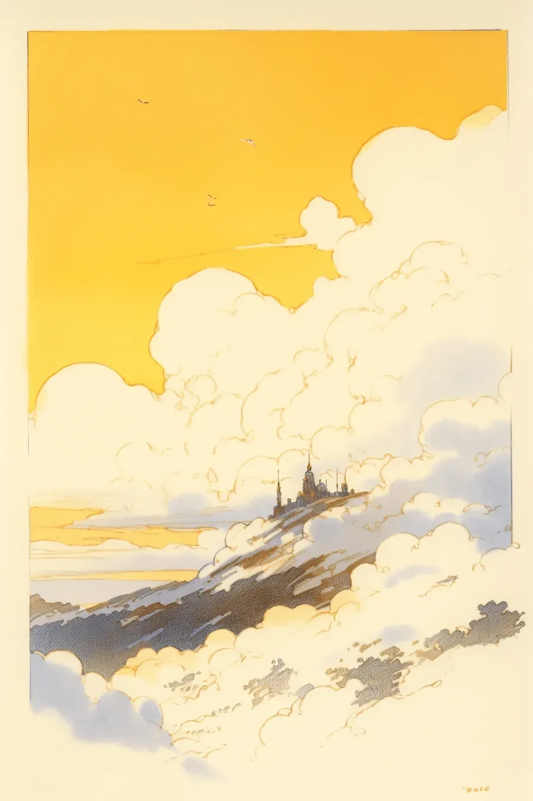

불평의 쪽지들이 전서구를 통해 도착했고, 하나하나가 더욱 절박했다.
[The complaints arrived by carrier pigeon, each note more desperate than the last.]
첫 번째 전서구가 급박한 날갯짓과 함께 내 구름석 책상 위에 착륙했고, 아침 내내 수십 마리가 그 뒤를 이었다. 내 떠 있는 성채 아래로, 세상은 빛을 잃어가기 시작했다.
[The first pigeon landed on my cloudstone desk with an urgent flutter, followed by dozens more throughout the morning. Below my floating citadel, the world had begun to lose its shine.]
“당신의 성이 우리의 꿈을 먹어치우고 있어요,"라고 한 쪽지가 비난했다. 어머니의 고뇌로 무거워진 양피지가 내 손에서 떨렸다. "제 딸이 몇 주째 아무것도 상상하지 못하고 있어요. 아이의 눈 뒤편은 백지처럼 텅 비어있어요.”
[“Your castle is eating our dreams,” one note accused. The parchment trembled in my hands, heavy with a mother’s anguish. “My daughter hasn’t imagined anything in weeks. The space behind her eyes is blank as fresh paper.”]
나는 수정같은 창문에 손바닥을 눌렀으며, 성의 황금빛 첨탑을 타고 올라가는 무지개빛 증기를 지켜보았다. 이제 보니 꿈들이 보였다 - 은빛과 장미빛의 섬세한 실들이 내가 지은 벽에 스며들고 있었다. 나의 걸작품이 그 그림자 아래에서 잠든 이들의 상상력을 집어삼키고 있었다.
[I pressed my palm against the crystalline window, watching wisps of iridescent vapor spiral up the castle’s golden spires. The dreams were visible now that I knew to look for them – delicate threads of silver and rose, weaving themselves into the very walls I’d built. My masterpiece was consuming the imagination of those who slept in its shadow.]
공중 건축가 길드는 너무 높이 짓는 것에 대해, 성층권 바로 아래에 걸린 꿈의 층을 관통하는 위험에 대해 경고했었다. 하지만 나는 듣지 않았다. 적운과 오만 속에 닻을 내린 성의 기초는 너무 깊어지고, 너무 탐욕스러워졌다. 매일 밤, 성은 더 많은 꿈들을 돌 속으로 끌어들였고, 아래의 세상이 회색빛으로 바래가는 동안 점점 더 웅장해져갔다.
[The Guild of Aerial Architects had warned me about building too high, about the dangers of piercing the dream layer that hung just below the stratosphere. But I hadn’t listened. The castle’s foundations, anchored in cumulus and hubris, had grown too deep, too hungry. Each night, it pulled more dreams into its stones, growing ever more magnificent while the world below faded to grayscale.]
나는 무엇을 해야 하는지 알았다. 떨리는 손가락으로 건축가의 컴퍼스를 들어 초석에 해체의 룬문자를 새기기 시작했다. 성이 흔들리며 속삭임의 교향악을 내뿜었다 - 수천 개의 포획된 꿈들이 그들의 진정한 주인에게로 돌아가고 있었다. 내 일생의 작품이 황금빛 안개로 부서져 내리는 동안, 나는 유성처럼 떨어지는 꿈들을 지켜보았다. 각각의 꿈이 이야기를 집으로 가져가고 있었다.
[I knew what had to be done. With trembling fingers, I reached for my architect’s compass and began to etch the dissolution runes into the cornerstone. The castle shuddered, releasing a symphony of whispers – thousands of captured dreams cascading back to their rightful owners. As my life’s work crumbled into golden mist, I watched the dreams descend like shooting stars, each one carrying a story home.]